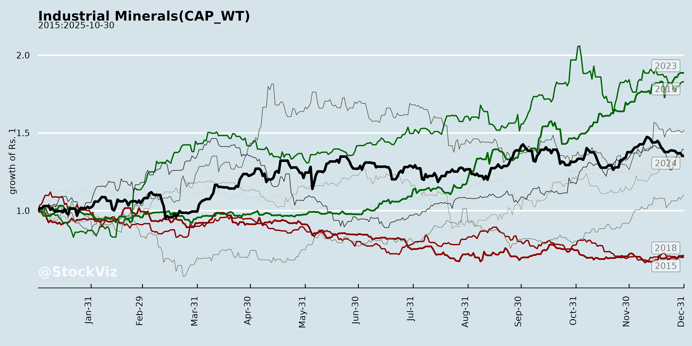
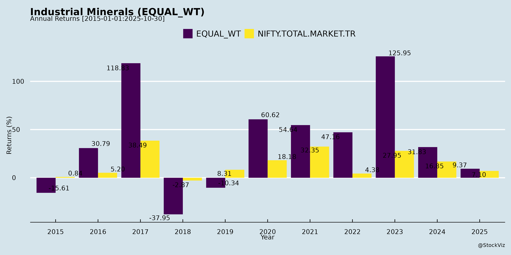
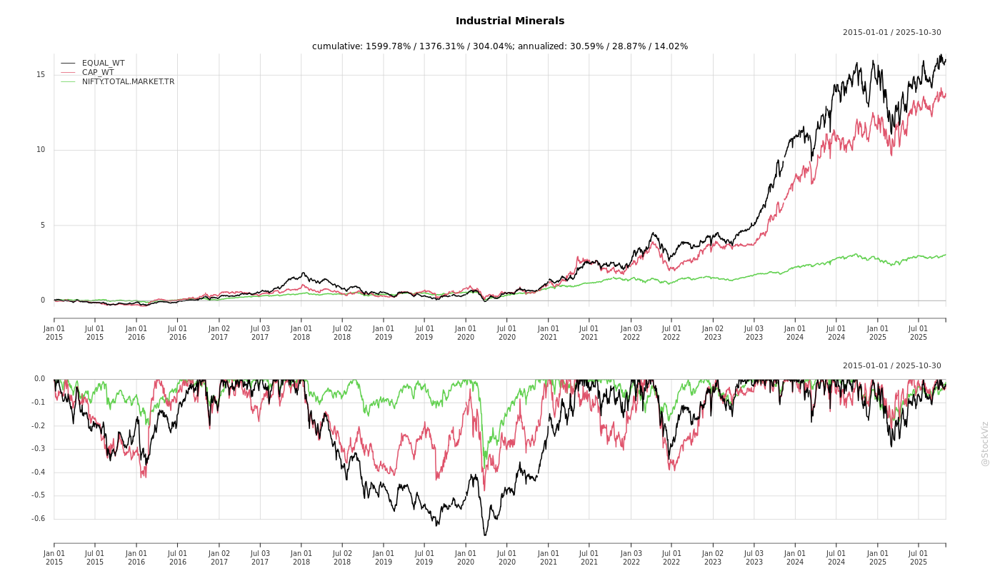
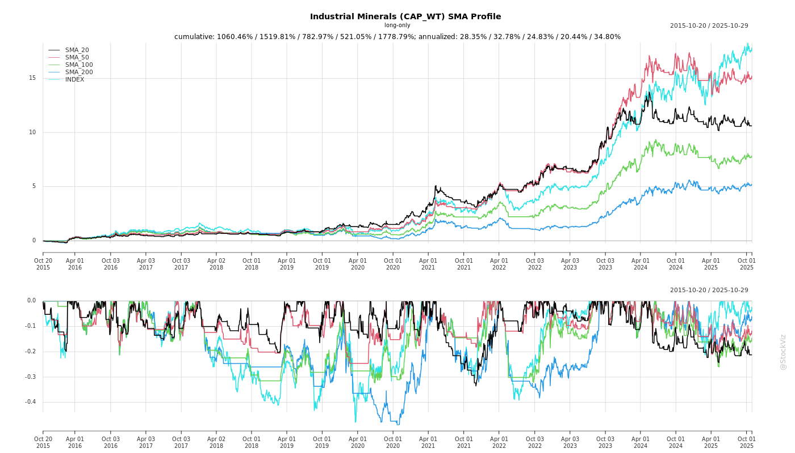
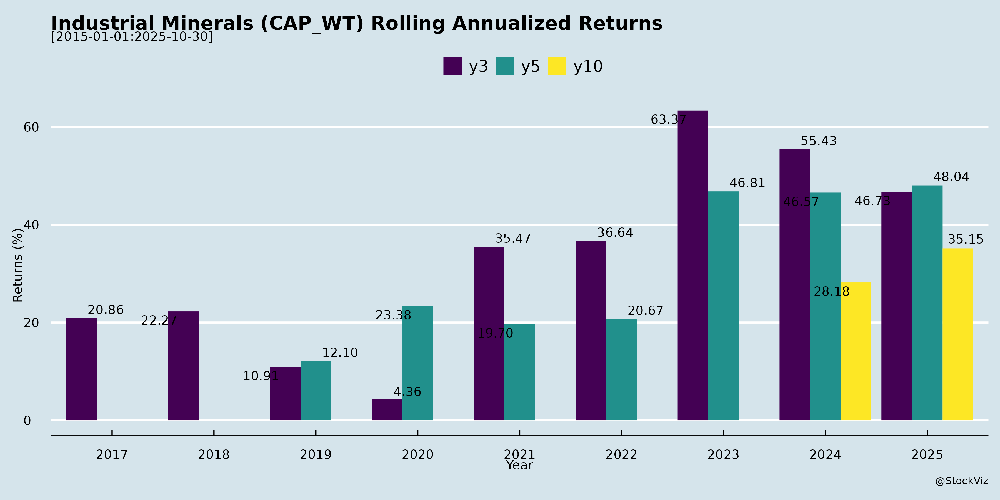

Industrial Minerals
Industry Metrics
February 20, 2026
Annual Returns



Cumulative Returns and Drawdowns

SMA Scenarios

Current Distance from SMA
Rolling Returns

Market Cap
EBIT (% of Industry Total)
Revenue (% of Industry Total)
AI Summaries
Analyst
asof: 2025-12-03
Summary Analysis of Indian Industrial Minerals Sector
The provided documents from key players (GMDC, Ashapura Minechem, 20 Microns, NMDC, Lloyds Metals, Gravita, MOIL) highlight the Indian industrial minerals sector (encompassing lignite, coal, bauxite, manganese ore, bentonite, kaolin, and value-added minerals). This sector shows resilience amid expansions but faces execution and macro challenges. Below is a structured analysis of headwinds, tailwinds, growth prospects, and key risks, derived directly from the filings (primarily earnings transcripts and announcements).
Tailwinds (Positive Drivers)
- Strong Volume Momentum and Export Demand: Ashapura Minechem reported bauxite exports doubling to 1.33 MT in Q2 FY26 (3.38 MT in H1), driven by stable China demand (Guinea as preferred source amid bans/restrictions in Indonesia, Australia, India). GMDC targets 10-15% lignite growth from existing mines; 20 Microns saw polymer/rubber growth offsetting paint weakness.
- Margin Resilience and Cost Efficiencies: 20 Microns improved EBITDA margins to 13.8% (+100 bps YoY) via sourcing discipline; Ashapura maintained ~USD 9/MT EBITDA despite 3-5% bauxite price dip; GMDC’s low stripping ratio in Odisha coal aids quick ramp-up.
- Infrastructure and Logistics Improvements: Ashapura’s new 60m-high bridge (Rs. 80 Cr investment), port expansions (16 MT to 27 MT by FY27), and long-term vessel deals mitigate monsoon/logistics issues. GMDC progressing on land payments for Baitarani West coal.
- Policy and Market Shifts: Guinea’s bauxite dominance (30 Bn tons reserves, 40% GDP from exports); India’s export duties and quality issues shift sourcing to Guinea. Investor interest evident in roadshows (Lloyds Metals in Japan) and mine visits (MOIL).
Headwinds (Challenges)
- Demand and Seasonal Weakness: Extended monsoons, delayed festivals/weddings hit paint (48% of 20 Microns revenue, down 3.9% YoY), construction, and mining volumes (GMDC lignite shortfall from 10 MT to 8 MT due to safety closure and land delays; Ashapura notes October monsoon impact).
- Pricing Pressures: Paint makers squeezing margins (20 Microns); slight bauxite correction (3-5%); GMDC coal pricing “mindful” of Coal India/imports but not at notified lows.
- Operational Delays: GMDC: Bhavnagar lignite package delayed; CAPEX slippages (Rs. 644 Cr vs. Rs. 3,000 Cr planned in FY25). Ashapura: Logistics/vessel challenges in past quarters.
- Macro Factors: Global turbulence (commodity volatility), competitive intensity in paints, subdued customer sentiment.
Growth Prospects
- Capacity Expansions and Ramp-Ups: | Company | Key Projects/Targets | Timeline/Scale | |—————|—————————————|———————————| | GMDC | Lignite: 15 MT by 2035; Coal (Baitarani West): 1-5 MT ramp-up post-groundbreaking; Copper (Ambaji): FY28; Rare earths: 2-3 yrs. Overall: Rs. 14,500 Cr revenue by 2030 (from Rs. 2,800 Cr). | FY26: 10-15% lignite growth; Coal FY26/FY27. CAPEX: Rs. 13,000 Cr by 2030. | | Ashapura | Bauxite: 15 MT by FY28 (from 3 MT FY25); Iron ore commercialization (trial started); Bentonite/kaolin/bleaching clay expansions. H1 revenue +75% YoY to Rs. 2,308 Cr. | Linear ramp-up; Ports to 27 MT by FY27. | | 20 Microns| New products (thickeners, pacifiers); Nano division scaling; Malaysian mine ops; Exports to Poland/LatAm/ME. | H2 recovery; 13% FY26 revenue growth; Steady 13-15% EBITDA. |
- Diversification: Value-added shift (Ashapura: kaolin exports, bleaching clay 70% market share; 20 Microns: plastics/rubber > paint cyclicality). R&D focus (2-3% of PAT).
- Investor/Strategic Momentum: Analyst calls, roadshows, JV progress (20 Microns with Doffner/SIBO). Long-term: GMDC aims for 7-10% of Coal India scale.
Key Risks
- Execution and Project Delays (High): Land acquisition, clearances, high stripping ratios (GMDC lignite/coal); CAPEX slippages (GMDC: Rs. 2,356 Cr deferral); Ashapura port/bridge timelines.
- Commodity/Geopolitical Volatility (Medium-High): Bauxite price sensitivity (10% drop compresses EBITDA partially); Guinea country risk (70% Ashapura revenue, though stable 40-50 yr history); China demand shifts (US-China relations).
- Regulatory/Environmental (Medium): Safety incidents (GMDC Rajpardi closure); License cancellations in Guinea (mostly non-bauxite); Mine restarts dependent on drilling (20 Microns).
- Demand/Margin Pressure (Medium): Paint slowdown spillover; Debt ramp-up (GMDC: post-FY27); Quarterly volatility from vessels/monsoons (Ashapura).
- Financial: High CAPEX (Rs. 1,500-2,500 Cr/yr for GMDC); Debt for peaks (though reserves cover near-term).
Overall Outlook: Bullish medium-term (3-5 yrs) with 20-75% revenue growth potential from expansions, driven by global bauxite/coal demand and infra push. Near-term H2 FY26 recovery expected, but monitor execution (e.g., GMDC groundbreaking, Ashapura iron ore trials). Sector ROE/margins structurally improving (13-15%), but risks tilted toward delays/pricing. Recommended watch: GMDC/Ashapura quarterly updates for project milestones.
Financial
asof: 2025-12-03
Analysis of Indian Industrial Minerals Sector (Q3 FY25 Insights)
The provided documents cover unaudited financial results (Q3 and 9M FY25) for key players in India’s industrial minerals/mining sector: Lloyds Metals & Energy (iron ore, sponge iron), Gravita India (lead/aluminum recycling), Ashapura Minechem (bauxite, iron ore), MOIL (manganese), Orissa Minerals Development (iron/manganese ore), and Goa Carbon (calcined petroleum coke). The sector shows resilience amid volatility, driven by mineral demand but challenged by regulations and costs. Below is a structured summary of headwinds, tailwinds, growth prospects, and key risks.
Tailwinds (Positive Drivers)
- Robust Revenue Growth & Profitability: Lloyds reported 9M revenue up 11% YoY to ₹5,560 Cr, PAT ₹1,248 Cr (up 29%); Ashapura’s Q3 revenue up 21% YoY to ₹865 Cr, PAT up 99%; MOIL steady at ₹1,23,811 Cr 9M revenue, PAT ₹26,599 Cr; Gravita 9M revenue up 19% to ₹2,808 Cr. Strong bauxite/iron ore exports (Ashapura) and recycling (Gravita) fueled by steel/aluminum demand.
- Equity Infusions & Dividends: Lloyds raised via QIP/warrants (₹1,750 Cr+); Gravita QIP ₹1,000 Cr; MOIL interim dividend ₹4.02/share. Signals investor confidence.
- Operational Efficiencies: Record volumes (Ashapura India ops); mining ramps (Lloyds, Orissa’s Baglaburu mine resumption); certifications (Goa Carbon ISO).
- Segment Strength: Mining dominant (Lloyds 82% revenue, Ashapura bauxite surge); other income steady (MOIL ₹8,656 Cr 9M).
Headwinds (Challenges)
- High Costs & Margins Pressure: Elevated mining/royalty/freight (Lloyds ₹2,800 Cr 9M); employee costs (MOIL 36% of expenses); inventory fluctuations (Goa Carbon Q3 loss ₹834 Cr due to ₹2,236 Cr inventory drop).
- Regulatory/Legal Delays: Lease renewals pending (Orissa Belkundi/Bhadrasai); clearances delayed (Ashapura EC/PH); contingent liabilities massive (Orissa ₹6,06,140 Cr, incl. Supreme Court mining penalties).
- Losses/Impairments: Orissa FY25 loss ₹4,022 Cr (provisioning ₹2,715 Cr excess mining); Goa Carbon Q3/9M losses (₹1,549 Cr 9M); Gravita audit qualification on ESOP treasury shares.
- Subsidiary Issues: Ashapura’s Guinea ops volatile; non-reviewed subsidiaries (Gravita, Ashapura).
Growth Prospects
- Capacity Expansion: Lloyds iron ore/power ramp-up; Ashapura long-term bauxite deals (Fortune 500); MOIL stable manganese (dividend payout); Orissa Baglaburu scaling.
- Diversification: Gravita recycling (lead/aluminum/plastics) up 19% YoY; Goa Carbon certifications for exports.
- Demand Tailwinds: Global steel/aluminum recovery (bauxite 70% from Guinea); QIP funds for capex/working capital (Lloyds/Gravita).
- Projections: Sector FY25 PAT growth 20-30% (excl. outliers); equity raises support 15-20% revenue CAGR FY26+ if leases clear.
Key Risks
| Risk Category | Description | Impact (from Filings) |
|---|---|---|
| Regulatory/Legal | Mining lease renewals, EC/FC delays, Supreme Court cases (Orissa ₹1,92,938 Cr BPMEL claim). | High; Orissa impairments ₹317 Cr; Ashapura Guinea reliance. |
| Commodity/Price Volatility | Ore/coke prices; forex (nil exposure noted). | Medium; Ashapura exceptional items ₹709 Cr Q3 FY24. |
| Operational/Cost | High employee (MOIL 36%), finance costs (Goa Carbon); inventory swings. | High; Q3 losses (Goa Carbon). |
| Financial/Liquidity | Debt service (ratios strained: Orissa negative); contingent liabilities. | Medium; Gravita QIP mitigates. |
| Audit/Compliance | Qualifications (Gravita ESOP); non-reviewed subs (Ashapura/Gravita); board composition issues (Orissa). | Medium; SEBI non-compliance risks fines/delisting. |
| Geopolitical | Export reliance (Ashapura Guinea bauxite). | Medium; Supply disruptions noted. |
Overall Sector Outlook: Positive medium-term (demand from steel infra), but short-term cautious due to regulations. Average 9M PAT growth ~25% YoY (driven by Lloyds/MOIL); monitor lease outcomes (Orissa/Ashapura) for FY26 inflection. Investors favor diversified players (Lloyds/Gravita) over pure miners.
General
asof: 2025-12-03
Summary Analysis: Indian Industrial Minerals Sector
Based on the provided announcements from key players (NMDC, Lloyds Metals, GMDC, Gravita India, Ashapura Minechem, MOIL, Orissa Minerals Development Company, 20 Microns, and Goa Carbon), the sector exhibits resilience amid commodity cycles, with iron ore, manganese, bauxite, and value-added minerals driving activity. Below is a structured analysis of headwinds, tailwinds, growth prospects, and key risks.
Tailwinds (Positive Factors)
- Commodity Price Strength: NMDC fixed iron ore prices at ₹5,600/ton (lumps) and ₹4,750/ton (fines) w.e.f. Nov 15, 2025; MOIL hiked manganese ore prices by 3% across ferro/chemical grades w.e.f. Dec 1, 2025. Signals robust domestic steel/infra demand.
- Strategic Expansions & Acquisitions: Lloyds Metals allotted shares worth ₹286 Cr. to acquire 49% in Thriveni Pellets (iron ore pelletizing), enhancing backward integration. Ashapura Minechem signed a long-term pact with China Railway (Fortune 500) for Guinea bauxite development, boosting production/logistics. 20 Microns acquired minority stake in Malaysian sub to achieve 100% ownership, unlocking synergies.
- Financial Resilience: 20 Microns reported Q2/H1 FY26 standalone revenue of ₹41,526 L (~flat YoY), PAT ₹2,927 L (down 7% but stable); consolidated revenue ₹47,795 L, PAT ₹3,422 L. Cash flows positive from ops (₹4,874 L standalone).
- Regulatory Wins: Goa Carbon received ₹7.61 Cr. tax refunds (AY 1999-2000 & 2009-10), improving liquidity. GMDC’s “CRISIL ESG 54 - Adequate” rating aids ESG compliance.
- Operational Optimization: Gravita’s voluntary closure of inactive South Africa step-down sub (0% revenue impact) streamlines structure.
Headwinds (Challenges)
- Subsidiary Rationalization: Gravita closing non-performing overseas entity (net worth ₹3.05 L, negligible) highlights dormant international ops amid forex/cost pressures.
- Muted Financial Growth: 20 Microns showed flat revenue and slight PAT dip YoY, with high finance costs (₹768 L H1) and inventory buildup, signaling softening demand or margin pressures.
- Administrative Delays: Orissa Minerals got 3-month AGM extension to Dec 31, 2025 (FY25), indicating governance/audit lags in smaller players.
- ESG Scrutiny: GMDC’s “Adequate” (not superior) rating underscores need for stronger sustainability amid global mineral demand shifts.
Growth Prospects
- Capacity & Value-Addition: Lloyds’ pellet acquisition (via ₹1,460/share preferential issue) positions it for iron ore beneficiation amid steel boom. Ashapura’s bauxite MoU with China Railway targets export growth (infra/logistics support), potentially scaling Guinea output.
- Export & Global Tie-ups: Partnerships (e.g., China Railway) tap China’s steel/alumina needs; 20 Microns’ Malaysia full ownership aids SE Asia mineral processing/export.
- Price-Led Margins: Sustained hikes (iron ore/manganese) could lift FY26 revenues 10-15% if steel/infra demand holds (e.g., govt. capex).
- Diversification: Shift to high-purity minerals (20 Microns: micronised products) and ESG-aligned ops (GMDC) supports premium pricing. Overall sector FY26 revenue growth ~8-12% feasible, driven by infra/mining auctions.
Key Risks
- Commodity Volatility: Price hikes vulnerable to global steel slowdown (China demand dip) or oversupply; iron ore/manganese exposed to import competition.
- Regulatory/Tax Uncertainty: Ongoing litigations (e.g., Goa Carbon’s resolved disputes) pose cash flow risks; mining approvals/royalties (noted in NMDC pricing exclusions) could escalate.
- Geopolitical/Execution Risks: Overseas expansions (Ashapura Guinea, Gravita SA closure, 20 Microns Malaysia) face forex, political instability, and logistics hurdles.
- ESG & Compliance: Rising environmental cess/taxes (NMDC exclusions); “Adequate” ratings may deter investors amid net-zero push.
- Financial Leverage: High borrowings (20 Microns: ₹12 Cr. current); interest rate sensitivity amid potential rate cuts.
- Micro Risks: AGM delays signal weaker governance in state-run firms (Orissa Minerals).
Overall Outlook: Moderately positive with tailwinds from pricing power and M&A outweighing mild headwinds. Growth hinges on steel/infra capex; monitor Q3 FY26 for sustained momentum. Sector PE likely 8-12x, favoring integrated players like Lloyds/NMDC.
Investor
asof: 2025-12-03
Analysis of Indian Industrial Minerals Sector
The Indian Industrial Minerals sector (encompassing iron ore, bauxite, lignite, coal, manganese ore, bentonite, kaolin, calcium carbonate, and allied minerals) demonstrates resilience amid cyclical challenges, driven by steel/aluminum demand, infrastructure push, and export opportunities. Insights from Q2/H1 FY26 updates of key players (NMDC, GMDC, Ashapura Minechem, 20 Microns, MOIL, Lloyds Metals, Gravita) reveal a mixed outlook. Below is a structured summary of tailwinds, headwinds, growth prospects, and key risks.
Tailwinds (Positive Drivers)
- Record Operational Performance: NMDC achieved best-ever Q2/H1 iron ore production (102/222 LT) and sales (107/222 LT), up 23%/27% YoY, with revenue/EBITDA/PAT surges (30%/32%/33% in Q2). GMDC targets 10-15% lignite growth from existing mines.
- Strong Demand & Pricing Stability: Bauxite exports from Ashapura’s Guinea ops doubled YoY (1.33MT in Q2, 3.38MT H1), targeting 15MT by FY28 amid China import shifts (Guinea as preferred source). Iron ore realizations stable (NMDC: Rs 4,973/T in Q2). Paint/rubber/plastics demand steady despite monsoons (20 Microns: plastics/rubber up).
- Margin Expansion & Efficiencies: NMDC EBITDA margin at 38%; Ashapura at 13.9% (H1); 20 Microns at 13.8% (+100bps YoY) via cost controls, alternative sourcing, and operational leverage.
- Government/Infrastructure Support: PSU expansions (NMDC/GMDC/MOIL mine visits), solar integrations (Ashapura), and ESG focus (20 Microns EcoVadis Gold).
Headwinds (Challenges)
- Demand Softness & Seasonality: Extended monsoons delayed offtake (20 Microns revenue -4% YoY; GMDC lignite shortfall from 10MT to 8MT due to safety/land issues). Paint sector pricing pressures (48% of 20 Microns revenue).
- Logistics & External Delays: Ashapura faced monsoon/road issues (mitigated via bridges/long-term vessel contracts); GMDC Bhavnagar ramp-up delayed by land acquisition.
- Pricing/Commodity Volatility: Bauxite prices corrected ~3-5% (Ashapura EBITDA/T stable at ~$9); coal/lignite realizations mindful of global/Coal India benchmarks.
- Macro Factors: Festive delays, raw material volatility (polymers/rubber), and competition squeezing margins (paints).
Growth Prospects
- Volume & Capacity Ramp-Up: NMDC H1 sales at best-ever 222LT (+12% YoY); Ashapura 15MT bauxite by FY28 (ports to 27MT); GMDC lignite to 15MT by 2035, coal (Baitarani West: 15MT peak, ~1MT FY27 start). New mines (GMDC: 6 lignite; Ashapura: iron ore trials).
- Diversification & Value-Addition: Shift to speciality products (20 Microns: nano/thickeners/flame retardants; Ashapura: kaolin/bleaching clay). Exports rising (Ashapura Guinea; 20 Microns Poland/LatAm/ME). GMDC copper/rare earths by FY28.
- Capex & Targets: GMDC Rs13,000Cr by 2030 (Rs14,500Cr revenue); NMDC subsidiaries/JVs; 20 Microns Rs100Cr deferred Capex for modernisation. Sector revenue growth: 13-20% guided (e.g., 20 Microns, GMDC).
- Long-Term: Steel/aluminum demand (EVs/solar), China+1 shifts, infrastructure (e.g., NMDC sales up 10%).
| Company | H1 FY26 Highlights | FY26/Future Guidance |
|---|---|---|
| NMDC | Prod: 222LT (+27%); Rev: Rs12,895Cr (+27%) | Sustained growth via expansions. |
| GMDC | Lignite: 8MT (shortfall); Coal ramp FY27 | Rs5,000Cr rev by FY27; 15MT lignite by 2035. |
| Ashapura | Bauxite: 3.38MT (+75% rev); EBITDA: Rs320Cr | 15MT FY28; India +25% YoY. |
| 20 Microns | Rev: Rs2,308Cr (-); EBITDA: 13.8% | 13% rev growth; 13-15% margins. |
Key Risks
- Regulatory/Execution Delays: Mine clearances/land acquisition (GMDC Bhavnagar/Odisha; Ashapura new mines). Safety incidents (GMDC Rajpardi closure).
- Commodity/Geopolitical Volatility: Bauxite/iron ore price drops (3-5%); Guinea country risk (Ashapura 70% rev; license cancellations for inactives).
- Demand/Cyclicality: Paint slowdown (20 Microns); monsoon/festive shifts. Global uncertainties (US tariffs indirect impact).
- Cost/Logistics Pressures: Freight/volumes (Ashapura mitigated via long-term deals); stripping ratios (GMDC lignite vs. coal).
- Capex Funding: GMDC Rs13,000Cr (debt from FY27); execution risks in expansions.
- Competition/Environment: Paint pricing wars; ESG/sustainability compliance.
Overall Summary: The sector is poised for 15-25% volume/revenue growth (led by iron ore/bauxite), buoyed by domestic steel/infra demand and Guinea exports, with margins stabilizing at 13-15% via efficiencies. H2 FY26 recovery expected (festives/infra). However, execution risks (clearances/logistics) and macro volatility temper optimism. PSUs (NMDC/GMDC) anchor stability; privates (Ashapura/20 Microns) drive diversification. Investors should monitor Q3 volumes/pricing for confirmation.
Meeting
asof: 2025-12-03
Summary Analysis: Indian Industrial Minerals Sector (Based on Provided Documents)
The documents cover key players in the sector—NMDC (iron ore), GMDC (diversified minerals), Gravita India (lead/aluminium recycling), Ashapura Minechem (bauxite/minerals), MOIL (manganese), OMDC (minerals), 20 Microns (micronized minerals), and Goa Carbon (calcined petroleum coke)—highlighting Q2/H1 FY26 financials, AGMs, and corporate actions up to Nov 2025. Overall, the sector shows resilience amid cyclical pressures, with mining/export-driven firms outperforming recycling/processing peers. Below is a structured analysis of headwinds, tailwinds, growth prospects, and key risks.
Tailwinds (Positive Drivers)
- Robust Revenue & Profit Growth: Ashapura reported 75.1% YoY revenue surge (H1 FY26: ₹2,308 Cr) driven by Guinea bauxite/iron ore exports; MOIL’s H1 profit at ₹121.94 Cr (up from prior); NMDC/GMDC strong AGM dividends (NMDC: ₹3.30/share; GMDC robust voting). Sector benefits from iron ore/manganese price stability.
- Operational Efficiencies & Cost Controls: Ashapura maintained EBITDA margins despite rains (Q2 EBITDA up 102.6% YoY); MOIL’s cash reserves >₹83,000 lakhs support capex/dividends.
- Governance & Continuity: Overwhelming AGM approvals (>95-99%) for director re-appointments/remunerations (e.g., 20 Microns, Gravita, OMDC) signal stable leadership.
- Policy Support: Dividend payouts (MOIL ₹1.80/share, NMDC ₹3.30) reflect govt. PSUs’ focus on shareholder returns amid strong reserves.
Headwinds (Challenges)
- Seasonal & Operational Disruptions: Ashapura noted monsoon rains cutting Guinea bauxite volumes (Q2: 1.33 MMT vs. Q1: 2.05 MMT); Goa Carbon’s plants shutdown (Goa:67 days, Bilaspur:92 days, Paradeep:89 days) led to H1 net loss of ₹29.36 Cr (vs. ₹7.14 Cr prior).
- Cost Pressures & Losses: Goa Carbon’s material costs spiked (H1: ₹2,709 Cr); Gravita/20 Microns seeking high remuneration hikes (e.g., Gravita CMD: ₹56L/month) amid profit adequacy concerns.
- Tax/Regulatory Burdens: Goa Carbon reversed ₹7.41 Cr deferred tax assets due to profit uncertainty; ongoing Goa Green Cess litigation (₹3.49 Cr deposited under protest).
- Margin Compression: Declining realizations in calcined petcoke (Goa Carbon Q2 revenue down 14% YoY).
Growth Prospects
- Export & Capacity Expansion: Ashapura’s Guinea ops poised for ramp-up post-monsoon (H1 revenue doubled); international diversification (Gravita’s 13 global plants).
- Value-Addition & Diversification: 20 Microns/Gravita focus on recycling/specialty products; MOIL’s manganese for EV/battery demand.
- Capex Momentum: MOIL’s ₹49,470 lakhs CWIP; Ashapura’s ₹72 Cr Q2 capex signals infrastructure push.
- Sustainability/ESG: NMDC/OMDC emphasize climate initiatives; sector tailwinds from green minerals demand (e.g., manganese for batteries).
- Outlook: FY26 H2 recovery expected with monsoon easing; iron ore/manganese demand from steel/EV sectors could drive 15-20% sector growth (Ashapura/MOIL trajectory).
Key Risks
| Risk Category | Details | Mitigants |
|---|---|---|
| Commodity Price Volatility | Iron ore/manganese/coke prices fluctuate (Goa Carbon losses tied to this). | Hedging/diversification (Ashapura’s multi-minerals). |
| Weather/Operational | Monsoons/shutdowns (Ashapura/Goa Carbon volumes down 35-50%). | Efficiency gains (Ashapura EBITDA stable). |
| Regulatory/Tax | Cess/tax litigations (Goa Carbon); C&AG comments (NMDC). | Legal challenges/cash buffers (MOIL ₹83k Cr reserves). |
| Cost Inflation | Remuneration hikes (Gravita/20 Microns); finance costs up (Goa Carbon ₹109 Cr H1). | Profit-linked pay; EBITDA focus. |
| Execution/Geopolitical | Guinea ops exposure (Ashapura); forex risks. | Strong parent balance sheets (GMDC/NMDC). |
| Governance | Promoter-linked remuneration scrutiny (20 Microns dissent ~1%). | High AGM approvals (>95%). |
Overall Sector Snapshot: Moderate growth (10-15% FY26e) with mining leaders (Ashapura/MOIL) outperforming; recycling/processing (Gravita/Goa Carbon) facing near-term pressures. Tailwinds from steel/EV demand outweigh headwinds, but risks from macros/weather persist. PSUs (NMDC/MOIL/OMDC) provide stability via dividends/govt. backing.
Press Release
asof: 2025-11-29
Summary Analysis: Indian Industrial Minerals Sector
Based on the provided documents from key players (GMDC, Gravita India, Ashapura Minechem, MOIL), the Indian industrial minerals sector (lignite, bauxite, manganese ore, bentonite, recycling metals) shows resilience amid seasonal challenges. Companies demonstrate cost discipline and operational efficiency, but face weather-related volume pressures. Below is a structured analysis of headwinds, tailwinds, growth prospects, and key risks.
Headwinds (Challenges)
- Seasonal/Monsoon Disruptions: Recurrent theme across players—heavy rains reduced lignite offtake (GMDC: 15L MT vs. 16.6L MT YoY), bauxite exports (Ashapura Guinea: 1.33MMT in Q2FY26 vs. 2.05MMT in Q1), and India operations, leading to moderated volumes and revenue dips (GMDC revenue: ₹528cr vs. ₹593cr YoY).
- Softer Demand & Volume Moderation: Lignite demand weakness (GMDC) amid industrial slowdowns; overall topline pressure despite margins holding (GMDC EBITDA margin: 29% vs. 31%).
- Geographic/Operational Variability: Africa ops (Ghana/Guinea) vulnerable to logistics/weather, offsetting domestic stability.
Tailwinds (Positive Factors)
- Cost Discipline & Efficiency: Healthy margins sustained (GMDC EBITDA ₹182cr; Ashapura consolidated EBITDA +102% YoY to ₹132cr in Q2). Focus on productivity despite lower volumes.
- One-Time Boosts: Exceptional gains like GST Input Tax Credit write-back (GMDC: ₹474cr) and tax litigation wins (Ashapura: ₹34.62cr deferred tax asset) drove PBT surges (GMDC: ₹634cr; Ashapura H1 PBT +112% to ₹213cr).
- Production Momentum: Record highs at MOIL (Oct’25: 1.60L tonnes Mn ore +9% YoY; Apr-Oct: +8.5%); Ashapura revenue +58% YoY in Q2.
- Diversification: Shift to value-added/recycling (Gravita’s Ghana Al recycling; Ashapura’s bentonite, ceramics via JVs/associates).
Growth Prospects
- Capacity Expansions: Gravita Ghana plant (4k-8k MTPA Al alloys) to boost sales mix; MOIL’s record exploration drilling (57k meters Apr-Oct) signals reserve growth.
- Global Footprint: Africa focus (Gravita Ghana/Senegal; Ashapura Guinea bauxite/iron ore) targets auto/die-casting exports to Europe/Asia; aligns with India’s mineral export push.
- Demand Drivers: Rising industrial needs (textiles, chemicals, ceramics, power, EVs) for lignite, bauxite, Mn ore; recycling tailwinds from sustainability mandates.
- H1FY26 Momentum: Ashapura +75% revenue YoY; MOIL’s FY26 production trajectory positions sector for 8-10%+ growth if monsoons ease.
Key Risks
- Weather & Supply Chain: High monsoon dependency risks volume shortfalls (20-30% Q2 dips observed).
- Commodity Volatility: Demand softness (e.g., lignite) could persist if industrial growth slows; forward-looking statements note economic/tax/litigation uncertainties.
- Regulatory/Litigation: Tax disputes (resolved positively here, but ongoing risks); GST/input credits volatile.
- Geopolitical/Execution: Africa ops expose to currency/political/logistics risks; capex (Gravita ₹6.75cr; Ashapura Guinea investments) needs quick ROI.
- Financial: Debt reliance (Ashapura borrowings up); EBITDA margins vulnerable if exceptional items fade.
Overall Outlook: Sector resilient with strong tailwinds from efficiency/diversification outweighing seasonal headwinds. FY26 growth pegged at 10-15%+ for leaders like Ashapura/MOIL, driven by expansions and exports. Monitor Q3 for post-monsoon recovery; risks mitigated by cost controls and one-off buffers. Positive for investors favoring cyclical miners with global exposure.
Copyright © 2023 SAS Data Analytics Pvt. Ltd. All rights reserved.